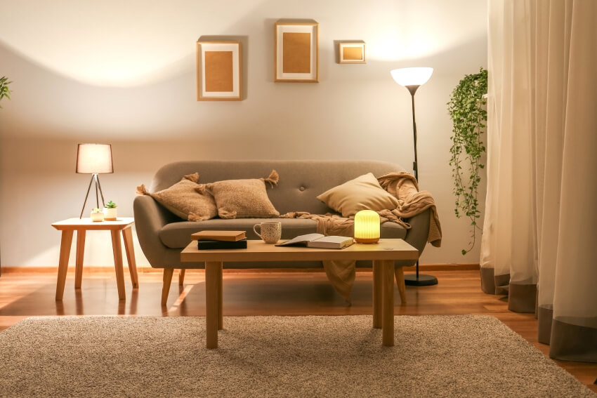

This is the general artificial lighting and overall illumination in a room. It can provide an even spread of light to give a comfortable level of brightness for most people to be able to see reasonably well and navigate safely around the room. Typically, it can be provided by a pendant fitting or ceiling downlights.
यह एक कमरे में सामान्य कृत्रिम प्रकाश व्यवस्था और समग्र रोशनी है। यह प्रकाश का एक समान प्रसार प्रदान कर सकता है ताकि अधिकांश लोगों को उचित रूप से अच्छी तरह से देखने और कमरे के चारों ओर सुरक्षित रूप से नेविगेट करने में सक्षम होने के लिए चमक का एक आरामदायक स्तर प्रदान किया जा सके। आमतौर पर, यह एक लटकन फिटिंग या सीलिंग डाउनलाइट्स द्वारा प्रदान किया जा सकता है।
